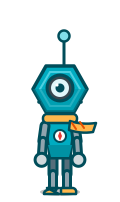
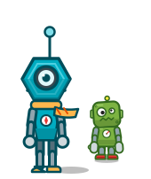
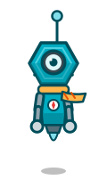
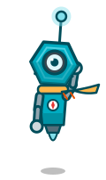
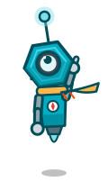
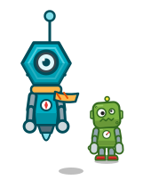
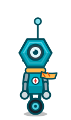
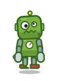

エンディングの伏線（遠くの工場のアンテナの光・工場長の古い写真）にだけ出る、ボルトより先に月へ行った先輩。 共通の特徴: 六角ナットの頭・大きな1つ目のレンズ（ボルトは左右で違う2つの目）・高いアンテナの水色のランプ（伏線の光）・旅人のマフラー・胸の方位磁針（ボルトは針のメーター）








| 観点 | A 旅人 | B 浮遊 | C 一輪 |
|---|---|---|---|
| ボルトとの見分け（シルエット） | ◎ 背が高く細い・六角の頭・長いアンテナ | ◎ 脚がなく浮く | ○ 車輪は B 案（不採用）のボルトに近い |
| 「先輩・旅人」らしさ | ◎ 背の高さとマフラーで落ち着いた年上に見える | ○ すでに飛んだ者らしいが、ボルトの夢の答えを先に見せすぎる | △ 工場の機械らしさが強い |
| 写真・遠くのアンテナとの相性 | ◎ 長いアンテナが遠くでも目立つ | ○ | ○ |
| 次回作での動かしやすさ（切り絵） | ○ ボルトと同じ部品構成 | ◎ 部品が少ない | ◎ |
おすすめ: A 旅人。ボルト（約 2.3 頭身・ずんぐり）と並べたとき、背の高さ・頭の形・目の数・アンテナで、シルエットだけで別人とわかり、 「先に旅立った先輩」という役にも合うため。